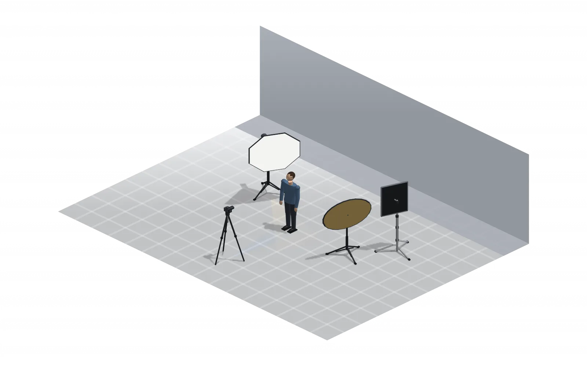
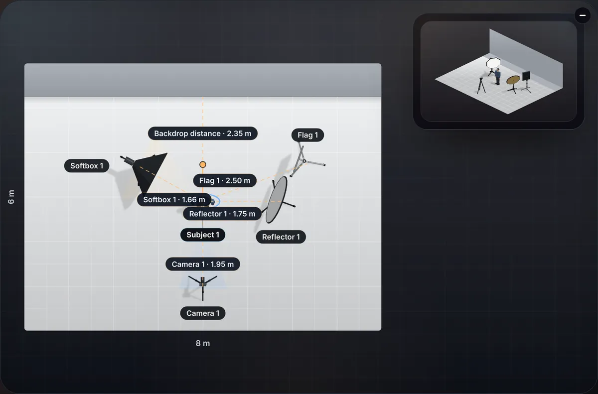
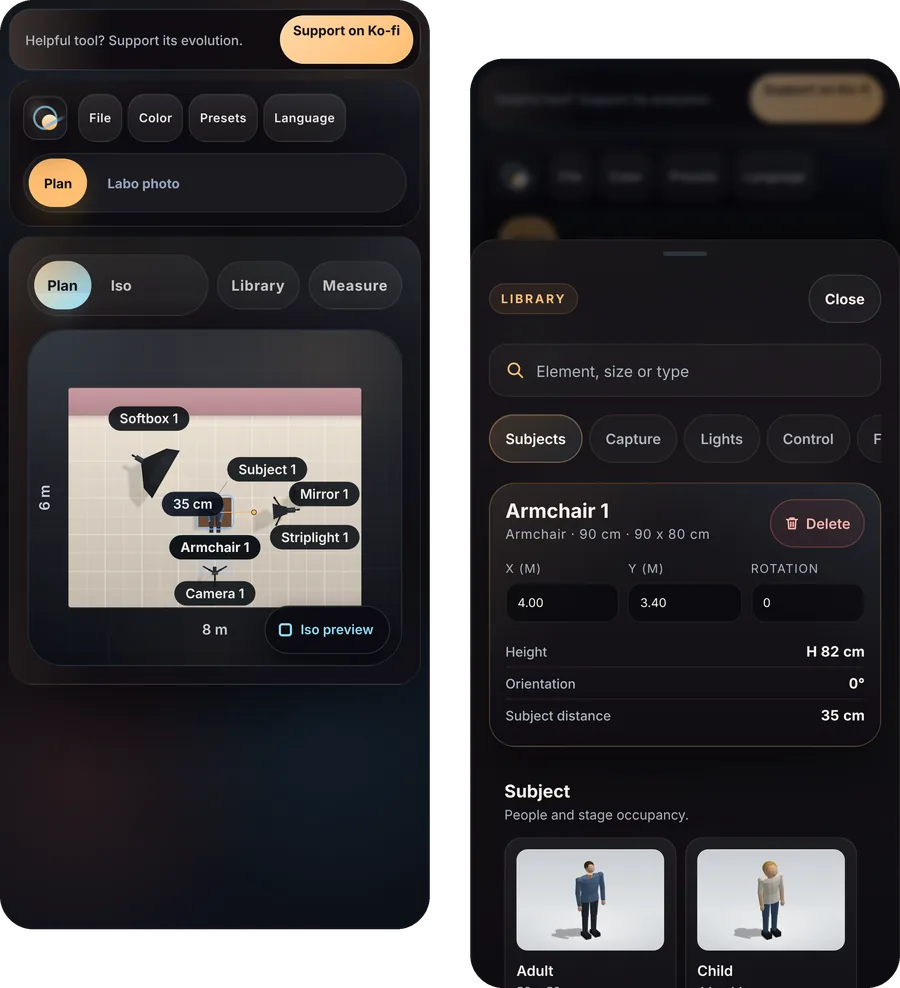

Portrait lighting diagram
A studio portrait base with a 45 degree key light, useful measurements and clean PDF export.
Photo studio planner
Place the subject, camera, lights and grip on a floor plan drawn to scale. LITE Studio measures the distances, shows the scene in 3D and exports a clear diagram to send to your team.

How it works
Pick one of 46 ready-made scenes (portrait, beauty, product, boudoir, interview…) or start on an empty 8 × 6 m studio.
Add gear from the library, move it with your mouse or finger and rotate it with the orange handle. Every item has its real dimensions.
Distances mode shows the distances that matter. Then export the plan as PNG or PDF, or copy the image to send it straight away.
What LITE Studio does
Plan and 3D view
Softboxes, umbrellas, C-stands, reflectors, furniture: all 80 library items are modelled at their real dimensions. Switch from the top view to the 3D view to judge volumes and the space around your subject.

Measurements
Turn on Distances: LITE Studio shows the distance from the subject to the backdrop, the camera and every light, with an estimated aperture at ISO 100 for the key light. You can also draw your own point-to-point measurements.

Photo lab
Change the ISO, aperture and focal length and instantly see the result on a photo: noise, exposure, depth of field and framing. Compare mode puts the reference image next to your setting.

On set
On tablets and phones the interface tightens up: the library opens as a sliding panel, you pinch to zoom the plan and every button stays easy to tap. Your own presets are kept in the browser.

Presets
Each preset is a realistic starting point: load it, adapt it to your studio, then save your own version.
Free, no account, nothing to install. Open the app and load a preset to try it.
Go further
SEO pages
These pages answer a clear intent, then send visitors straight into the app with the right preset loaded.
A studio portrait base with a 45 degree key light, useful measurements and clean PDF export.
Furniture, mood, backdrop, backdrop distance and circulation for a boudoir studio session.
A clear video studio setup with camera subject distance, LED panels and quick export for the crew brief.